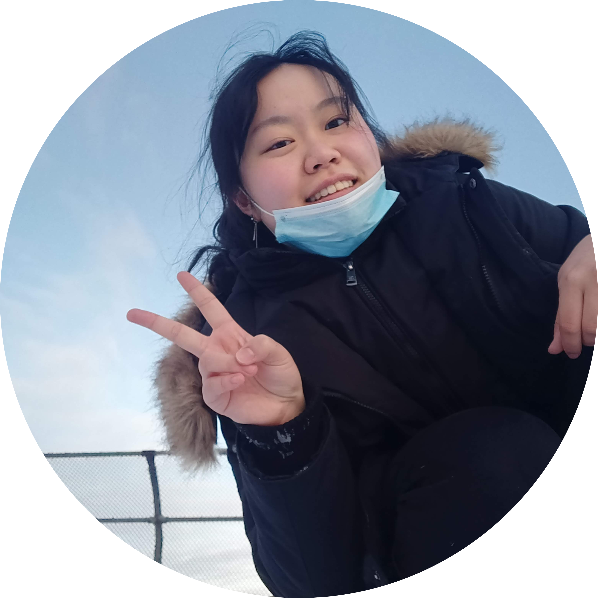

Hi everyone, I'm Connie!
I'm currently a senior at Rutgers majoring in Aerospace Engineering with a double major in Professional Physics.
I am fascinated by all feats of engineering and science, from obvious ones like rocket launches and spacecraft,
to more daily ones, like how
people will eat more M&Ms if there's more colors.
But specifically, I am passionate about exploring the universe we live in. Whether that exploration comes in the form of
discovering fundamental laws of physics that govern our creation, or creating spacecraft to search for clues about
the formation of life, I want to learn how the world works, and hopefully contribute to our discoveries in the future. Maybe we'll
even find some friends in this barren universe :) (top ten anime crossovers?).
As I navigate the worlds of engineering and physics, I've had the awesome chance to do a few things that might be
cool:
(disclaimer: while i did piece together this website by hand and with some beep boop hours, many elements are adapted from much smarter people than me! here's a list of code i took and adapted for myself- boop!)
Wrote a 20 page proposal telling the Air Force why SPICEsat should be launched... which got accepted! Rutgers is now part of the
University Nanosat Program
and we have our first review in a month which we are totally ready for...
Yes, our mission mascot is a chili pepper dressed in a scarlet knight costume.
Worked in Cape Canaveral, FL figuring out how to clean, weigh, fix, and throw away fairings!
This was the first in-person internship
I've had in a while and it was awesome doing cool things like watching a rocket land and doing mock astronaul training with the Inspiration4 nurses :)
I also did important things like create a tier list of our grab-n-go lunches (the poke bowls won)
Started a new part time rotation working on
LEMS
electrical power system energy balance analysis in Python, and adapting
X-Ray weld inspection fixtures for Roman Space Telescope, along with 3D printing
Integration & Test support structures.
Quarantine continues... I am still eating lunch with people on video call. This stuff is also super new to me, so I'm still learning!
Started bringing to life Rutgers' first CubeSat mission proposal from scratch,
centered around testing Prof. Burlion's
propellant slosh-oriented control algorithms for the
NASA CSLI!
Onboarded over 20 members for three subsystem teams, lead the Systems team through proposal writing,
and collaborating with Prof. Burlion's lab.
Honestly a pretty dope experience, learned what it's like to lead a large team who is depending on you,
also learned how hard it is to come up with an acronym for a mission :(
Due to COVID, incoming Rutgers engineering students were encouraged to participate in bi-weekly summer squads to
help introduce them to the college environment and provide training for course registration etc. I got to lead two
squads of 15-20 students and teach them about all things college! From hosting game nights, to teaching them how
to navigate the registration websites, I served as a mentor answering any questions they had regarding college
lifestyle and transitioning from high school.
Got really creative with Zoom icebreakers and answered countless questions about how the heck Rutgers engineering
cirriculums work
Started a series of weekly Tea Time talks with a few friends to bring awareness and create a community for LGBTQ+ people in the tech scene. This was a super cool opportunity to openly speak about issues of diversity and inclusion in STEM, and meet some awesome people from industry professionals to professors who have seen it all!
Joined the SoE Ambassador team to represent Rutgers SoE in
prospective and admitted student events :)
I also am working on the Tour Engagement Committee to create new virtual tour plans for the engineering school,
and prepare presentations for possible tour and panel formats for the future!
I learned a ton about speaking confidently in front of 100+ students, also talked to some kids about how cool engineering is :)
At some point, also convinced people that Iron Man is representative of all of the engineering departments at Rutgers.
Came back in the summer to work on looking into
Model Based Systems Engineering
for the propulsion branch, and learning how to model the
Roman Space Telescope
propulsion system in MagicDraw. I modeled the structural and behavioral
aspects of the system, and gave a presentation to my branch at the end of my rotation about MBSE applications. I also
got to do CFD simulations in STAR-CCM+ modeling sloshing fluids in cylindrical tanks.
I also was the PAXC center chair, helping to organize events for interns!
Because of COVID, this was done remotely. I got to eat lunch with people in front of my camera, though!
Joined STAR the same time I started working with Prof. Burlion. Revived the CubeSat club and started making
strides towards making a team of motivated CubeSat engineers. I started with a weather balloon project,
which got cancelled due to COVID, but instead led a team of 4 students to develop a Python-based thermal simulation,
similar to SatTherm.
Found out that someone sent garlic bread to space on a weather balloon,
might be a stretch goal for us.
Joined Prof. Burlion's lab looking to get into spacecraft controls, and looking for an advisor to build a CubeSat
program at Rutgers! I really wanted to get space industry experience to students at Rutgers, and Prof. Burlion has
really cool research to put on a CubeSat.
Got to also design an experiment/summer project for another student funded by the NJSGC!
Dove into the space industry with a half year co-op, working on a user-friendly power balance analysis tool in Python,
learning about high-voltage circuitry on the Dragonfly Mass Spectrometer,
and doing some LabView programming for branch activities. I also presented my work at the Rutgers Interns Present competition!
Watch my submission here
The crab cakes were also really good, and I got to go to the Interational Astronautical Conference!
Started off my research career with Prof. Singer looking at methods of
growing zinc oxide nanostructures to improve adhesion between copper and thermoset plastics. I also got to
shadow a grad student using the scanning electron microscope and do some X-ray diffraction analysis.
Had a lot of fun looking at little hexagons under a microscope, and was funded by the NJSGC!
And thus, began my journey into the neverending rabbithole of meeting cool people,
learning cool things, and learning cool things from cool people.
I joined some clubs like AIAA and Society of Physics Students and did some cool programming projects with
localization alorithms, launching an L1 certification model rocket, and learning more about physics!